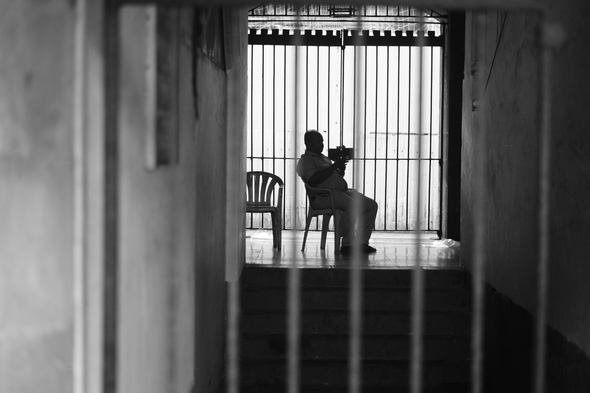

My Portfolio
Capturing real moments from everyday life, focusing on natural expressions, light, and the silent stories found in ordinary surroundings.
Documenting cultural events and human emotions through powerful visuals that reflect tradition, movement, and raw energy.
Page | 08